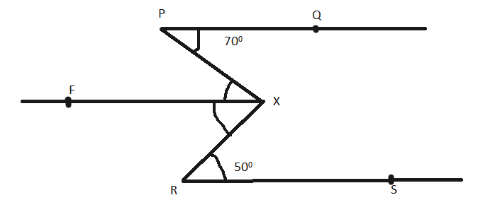

Question:1
Write down each pair of adjacent angles shown in Fig.
Solution:
Adjacent angles are the angles that have a common vertex and a common arm.
Following are the adjacent angles in the given figure:
Question:2
In Fig., name all the pairs of adjacent angles.
.png)
Solution:
In figure (i), the adjacent angles are:
In figure (ii), the adjacent angles are:
BAD and DAC
BDA and CDA
Question:3
In figure, write down: (i) each linear pair (ii) each pair of vertically opposite angles.
Solution:
(i) Two adjacent angles are said to form a linear pair of angles if their non-common arms are two opposite rays.
1 and 3
1 and 2
4 and 3
4 and 2
5 and 6
5 and 7
6 and 8
7 and 8
(ii) Two angles formed by two intersecting lines having no common arms are called vertically opposite angles.
1 and 4
2 and 3
5 and 8
6 and 7
Question:4
Are the angles 1 and 2 given in Fig. adjacent angles?
Solution:
No, because they have no common vertex.
Question:5
Find the complement of each of the following angles:
(i) 35°
(ii) 72°
(iii) 45°
(iv) 85°
Solution:
Two angles are called complementary angles if the sum of those angles is 90°.
Complementary angles of the following angles are:
Question:6
Find the supplement of each of the following angles:
(i) 70°
(ii) 120°
(iii) 135°
(iv) 90°
Solution:
Two angles are called supplementary angles if the sum of those angles is 180°.
Supplementary angles of the following angles are:
(i) 180° − 70° = 110°
(ii) 180° − 120° = 60°
(iii) 180° − 135° = 45°
(iv) 180° − 90° = 90°
Question:7
Identify the complementary and supplementary pairs of angles from the following pairs:
(i) 25°, 65°
(ii) 120°, 60°
(iii) 63°, 27°
(iv) 100°, 80°
Solution:
Since
Therefore, (i) and (iii) are the pairs of complementary angles and (ii) and (iv) are the pairs of supplementary angles.
Question:8
Can two angles be supplementary, if both of them be
(i) obtuse?
(ii) right?
(iii) acute?
Solution:
(i) No, two obtuse angles cannot be supplementary.
(ii) Yes, two right angles can be supplementary. ()
(iii) No, two acute angles cannot be supplementary.
Question:9
Name the four pairs of supplementary angles shown in Fig.

Solution:
Following are the supplementary angles:
AOC and COB
BOC and DOB
BOD and DOA
AOC and DOA
Question:10
In Fig.,
A,
B,
C are collinear points and ∠
DBA = ∠
EBA.
.png)
(i) Name two linear pairs
(ii) Name two pairs of supplementary angles.
Solution:
(i) Linear pairs:
ABD and DBC
ABE and EBC
Because every linear pair forms supplementary angles, these angles are:
ABD and DBC
ABE and EBC
Question:11
If two supplementary angles have equal measure, what is the measure of each angle?
Solution:
Let x and y be two supplementary angles that are equal.
According to the question,
Question:12
If the complement of an angle is 28°, then find the supplement of the angle.
Solution:
Let x be the complement of the given angle .
So, supplement of the angle =
Question:13
In Fig. 19, name each linear pair and each pair of vertically opposite angles:

Solution:
Two adjacent angles are said to form a linear pair of angles if their non-common arms are two opposite rays.
1 and
2
2 and
3
3 and
4
1 and
4
5 and
6
6 and
7
7 and
8
8 and
5
9 and
10
10 and
11
11 and
12
12 and
9
Two angles formed by two intersecting lines having no common arms are called vertically opposite angles.
1 and
3
4 and
2
5 and
7
6 and
8
9 and
11
10 and
12
Question:14
In Fig.,
OE is the bisector of ∠
BOD. If ∠1 = 70°, find the magnitudes of ∠2, ∠3 and ∠4.

Solution:
Since OE is the bisector of BOD,
Question:15
One of the angles forming a linear pair is a right angle. What can you say about its other angle?
Solution:
One angle of a linear pair is the right angle, i.e., 90°.
∴ The other angle = 180° - 90° = 90°
Question:16
One of the angles forming a linear pair is an obtuse angle. What kind of angle is the other?
Solution:
If one of the angles of a linear pair is obtuse, then the other angle should be acute; only then can their sum be 180°.
Question:17
One of the angles forming a linear pair is an acute angle. What kind of angle is the other?
Solution:
In a linear pair, if one angle is acute, then the other angle should be obtuse. Only then their sum can be 180°.
Question:18
Can two acute angles form a linear pair?
Solution:
No, two acute angles cannot form a linear pair because their sum is always less than 180°.
Question:19
If the supplement of an angle is 65°; then find its complement.
Solution:
Let x be the required angle.
Then, we have:
x + 65° = 180°
x = 180° - 65° = 115°
The complement of angle x cannot be determined.
Question:20
Find the value of
x in each of the following figures.
.png)
Solution:
(i)
Since (Linear pair)
(ii)
(iii)
(iv)
(v)
(vi)
Question:21
In Fig. 22, it being given that ∠1 = 65°, find all other angles.
.png)
Solution:
(Vertically opposite angles)
Since (Linear pair)
(Vertically opposite angles)
and
Question:22
In Fig., OA and OB are opposite rays:
(i) If x = 25°, what is the value of y?
(ii) If y = 35°, what is the value of x?
Solution:
AOC + BOC = 180° (Linear pair)
(i) If x = 25°, then
(ii) If y = 35°, then
Question:23
In Fig., write all pairs of adjacent angles and all the linear pairs.

Solution:
Adjacent angles:
Linear pairs of angles:
Question:24
In Fig. 25, find ∠x. Further find ∠BOC, ∠COD and ∠AOD.
Solution:
Question:25
How many pairs of adjacent angles are formed when two lines intersect in a point?
Solution:
If two lines intersect at a point, then four adjacent pairs are formed, and those pairs are linear as well.
Question:26
How many pairs of adjacent angles, in all, can you name in Fig.?

Solution:
There are 10 adjacent pairs in the given figure; they are:
Question:27
In Fig., determine the value of x.
Solution:
Question:28
In Fig., AOC is a line, find x.
Solution:
Question:29
In Fig.,
POS is a line, find
x.
.png)
Solution:
(Angles on a straight line)
Question:30
In Fig., lines l1 and l2 intersect at O, forming angles as shown in the figure. If x = 45°, find the values of y, z and u.
Solution:
Question:31
In Fig., three coplanar lines intersect at a point O, forming angles as shown in the figure. Find the values of x, y, z and u.
Solution:
BOD + DOF + FOA = 180° (Linear pair)
∴ FOA = u =
(Vertically opposite angles)
(Vertically opposite angles)
(Vertically opposite angles)
Question:32
In Fig., find the values of
x,
y and
z.
.png)
Solution:
Question:33
In Fig., line
n is a transversal to lines
l and
m. Identify the following:
.png)
(i) Alternate and corresponding angles in Fig. (i).
(ii) Angles alternate to ∠
d and ∠
g and angles corresponding to angles ∠
f and ∠
h in Fig. (ii).
(iii) Angle alternate to ∠
PQR, angle corresponding to ∠
RQF and angle alternate to ∠
PQE in Fig. (iii).
(iv) Pairs of interior and exterior angles on the same side of the transversal in Fig. (ii).
Solution:
(i) Figure (i)
Corresponding angles:
EGB and GHD
HGB and FHD
EGA and GHC
AGH and CHF
Alternate angles:
EGB and CHF
HGB and CHG
EGA and FHD
AGH and GHD
(ii) Figure (ii)
Alternate angle to d is e.
Alternate angle to g is b.
Also,
Corresponding angle to f is c.
Corresponding angle to h is a.
(iii) Figure (iii)
Angle alternate to PQR is QRA.
Angle corresponding to RQF is ARB.
Angle alternate to POE is ARB.
(iv) Figure (ii)
Pair of interior angles are
a and e
d and f
Pair of exterior angles are
b and h
c and g
Question:34
In Fig., AB and CD are parallel lines intersected by a transversal PQ at L and M respectively. If ∠CMQ = 60°, find all other angles in the figure.
Solution:
ALM = CMQ = (Corresponding angles)
LMD = CMQ = (Vertically opposite angles)
ALM = PLB = (Vertically opposite angles)
Since
CMQ + QMD = (Linear pair)
QMD =
QMD = MLB = (Corresponding angles)
QMD = CML = (Vertically opposite angles)
MLB = ALP = (Vertically opposite angles)
Question:35
In Fig., AB and CD are parallel lines intersected by a transversal PQ at L and M respectively. If ∠LMD = 35° find ∠ALM and ∠PLA.
Solution:
In the given Fig., AB || CD.
Question:36
The line
n is transversal to line
l and
m in Fig. Identify the angle alternate to ∠13, angle corresponding to ∠15, and angle alternate to ∠15.
.png)
Solution:
In this given Fig., line l || m.
Here,
Alternate angle to 13 is 7.
Corresponding angle to 15 is 7.
Alternate angle to 15 is 5.
Question:37
In Fig., line
l ||
m and
n is a transversal. If ∠1 = 40°, find all the angles and check that all corresponding angles and alternate angles are equal.
.png)
Solution:
In the given figure, l || m.
Here,
Also,
Thus,
Hence, alternate angles are equal.
Question:38
In Fig., line l || m and a transversal n cuts them at P and Q respectively. If ∠1 = 75°, find all other angles.
Solution:
In the given figure, l || m, n is a transversal line and ∠1 = 75°.
Thus, we have:
Question:39
In Fig., AB || CD and a transversal PQ cuts them at L and M respectively. If ∠QMD = 100°, find all other angles.
Solution:
In the given figure, AB || CD, PQ is a transversal line and QMD = 100°.
Thus, we have:
DMQ + QMC = 180° (Linear pair)
Thus,
DMQ = BLM = 100° (Corresponding angles)
DMQ = CML = 100° (Vertically opposite angles)
BLM = PLA = 100° (Vertically opposite angles)
Also,
CMQ = ALM = 80° (Corresponding angles)
CMQ = DML = 80° (Vertically opposite angles)
ALM = PLB = 80° (Vertically opposite angles)
Question:40
In Fig., l || m and p || q. Find the values of x, y, z, t.
Solution:
In the given figure, l || m and p || q.
Thus, we have:
(Vertically opposite angles)
(Corresponding angles)
(Corresponding angles)
(Corresponding angles)
Question:41
In Fig., line l || m, ∠1 = 120° and ∠2 = 100°, find out ∠3 and ∠4.
Solution:
.png)
In the given figure, ∠1 = 120° and ∠2 =100°.
Since
l ||
m, so
Also,
We know that the sum of all the angles of triangle is 180°.
Question:42
In Fig., line
l ||
m. Find the values of
a,
b,
c,
d. Give reasons.
.png)
Solution:
In the given figure, line l || m.
Thus, we have:
Question:43
In Fig., AB || CD and ∠1 and ∠2 are in the ratio 3 : 2. Determine all angles from 1 to 8.
Solution:
In the given figure, AB || CD and t is a transversal line.
Now, let:
Thus, we have:
Now,
Question:44
In Fig., l, m and n are parallel lines intersected by transversal p at X, Y and Z respectively. Find ∠1, ∠2 and ∠3.
Solution:
In the given figure, l || m || n and p is a transversal line.
Thus, we have:
Question:45
In Fig., if
l ||
m ||
n and ∠1 = 60°, find ∠2.
.png)
Solution:
In the given figure, l || m || n and ∠1 = 60°.
Thus, we have:
Question:46
In Fig., if
AB ||
CD and
CD ||
EF, find ∠
ACE.
.png)
Solution:
In the given figure,
AB ||
CD and
CD ||
EF.
Extend line
CE to
E'.
.png)
Thus, we have:
Question:47
In Fig., if
l ||
m,
n ||
p and ∠1 = 85°, find ∠2.
.png)
Solution:
.png)
In the given figure,
l ||
m,
n ||
p and ∠1 = 85°.
Now, let ∠4 be the adjacent angle of ∠2.
Thus, we have:
(Sum of interior angles on the same side of the transversal)
Question:48
In Fig., a transversal n cuts two lines l and m. If ∠1 = 70° and ∠7 = 80°, is l || m?
Solution:
We know that if the alternate exterior angles of two lines are equal, then the lines are parallel.
In the given figure, are alternate exterior angles, but they are not equal.
Therefore, lines l and m are not parallel.
Question:49
In Fig., a transversal n cuts two lines l and m such that ∠2 = 65° and ∠8 = 65°. Are the lines parallel?
Solution:
2 = 3 = 65° (Vertically opposite angles)
8 = 6 = 65° (Vertically opposite angles)
∴ 3 = 6
⇒ l || m (Two lines are parallel if the alternate angles formed with the transversal are equal)
Question:50
In Fig., show that AB || EF.
.png)
Solution:
Extend line CE to E'.
.png)
Question:51
In Fig., AB || CD. Find the values of
x,
y,
z.
.png)
Solution:
(Linear pair)
(Corresponding angles)
(Sum of adjacent interior angles is )
(Sum of adjacent interior angles is )
Question:52
In Fig., find out ∠
PXR, if PQ || RS.
.png)
Solution:
Draw a line parallel to PQ passing through X.

Here,
(Alternate interior angles)
∵ PQ || RS || XF
∴
Question:53
In Fig., we have
.png)
(i) ∠MLY = 2 ∠LMQ, find ∠LMQ.
(ii) ∠XLM = (2
x − 10)° and ∠LMQ =
x + 30°, find
x.
(iii) ∠XLM = ∠PML, find ∠ALY
(iv) ∠ALY = (2
x − 15)°, and ∠LMQ = (
x + 40)°, find
xSolution:
(i)
(ii)
(iii)
(iv)
Question:54
In Fig., DE || BC. Find the values of x and y.
Solution:
ABC = DAB (Alternate interior angles)
ACB = EAC (Alternate interior angles)
Question:55
In Fig., line AC || line DE and ∠ABD = 32°. Find out the angles
x and
y if ∠E = 122°.
.png)
Solution:
Question:56
In Fig., side BC of ∆ABC has been produced to D and CE || BA. If ∠ABC = 65°, ∠BAC = 55°, find ∠ACE, ∠ECD and ∠ACD.
.png)
Solution:
ABC = ECD = 55° (Corresponding angles)
BAC = ACE = 65° (Alternate interior angles)
Now, ACD = ACE + ECD
⇒ ACD = 55° + 65° = 120°
Question:57
In Fig., line CA ⊥ AB || line CR and line PR || line BD. Find ∠x, ∠y and ∠z.
Solution:
Since CA ⊥ AB,
We know that the sum of all the angles of triangle is 180°.
PBC = APQ = (Corresponding angles)
Since
Question:58
In Fig.,
PQ ||
RS. Find the value of
x.
.png)
Solution:
.png)
Question:59
In Fig., AB || CD and AE || CF; ∠FCG = 90° and ∠BAC = 120°. Find the values of x, y and z.
Solution:
BAC = ACG = 120° (Alternate interior angle)
∴ ACF + FCG = 120°
⇒ ACF = 120° − 90° = 30°
DCA + ACG = 180° (Linear pair)
⇒x = 180° − 120° = 60°
BAC + BAE + EAC = 360°
CAE = 360° − 120° − (60° + 30°) = 150° (BAE = DCF)
Question:60
In Fig., AB || CD and AC || BD. Find the values of x, y, z.
Solution:
(i) Since AC || BD and CD || AB, ABCD is a parallelogram.
CAB + ACD = 180° (Sum of adjacent angles of a parallelogram)
∴ ACD = 180° − 65° = 115°
CAD = CDB = 65° (Opposite angles of a parallelogram)
ACD = DBA = 115° (Opposite angles of a parallelogram)
(ii) Here,
AC || BD and CD || AB
DAC = x = 40° (Alternate interior angle)
DAB = y = 35° (Alternate interior angle)
Question:61
In Fig., state which lines are parallel and why?
.png)
Solution:
Let F be the point of intersection of line CD and the line passing through point E.
.png)
Since
ACD and
CDE are alternate and equal angles, so
ACD = 100° =
CDE
∴ AC || EF
Question:62
In Fig. 87, the corresponding arms of ∠ABC and ∠DEF are parallel. If ∠ABC = 75°, find ∠DEF.
.png)
Solution:
.png)
Construction: Let G be the point of intersection of lines BC and DE.
∵ AB || DE and BC || EF
∴
(Corresponding angles)
Question:63
The sum of an angle and one third of its supplementary angle is 90°. The measure of the angle is
(a) 135°
(b) 120°
(c) 60°
(d) 45°
Solution:
Let the required angle be x.
Now, supplementary of the required angle = 180∘ − x
Then,
Hence, the correct answer is option (d).
Question:64
If angles of a linear pair are equal, then the measure of each angle is
(a) 30°
(b) 45°
(c) 60°
(d) 90°
Solution:
Let the required angle be x
Now, Sum of linear pair angles = 180∘
⇒ x + x = 180∘
⇒ 2x = 180∘
⇒ x = 90∘
Hence, the correct answer is option (d).
Question:65
Two complemntary angles are in the ratio 2 : 3. The measure of the larger angle is
(a) 60°
(b) 54°
(c) 66°
(d) 48°
Solution:
Let the angles be 2x and 3x.
Now, 2x + 3x = 90∘
⇒ 5x = 90∘
⇒ x = 18∘
∴ Larger angle = 3x = 3 × 18∘ = 54∘
Hence, the correct answer is option (b).
Question:66
An angle is thrice its supplement. The measure of the angle is
(a) 120°
(b) 105°
(c) 135°
(d) 150°
Solution:
Let the required angle be x.
Then,
Hence, the correct answer is option (c).
Question:67
In Fig. 88 PR is a straight line and ∠PQS : ∠SQR = 7 : 5. The measure of ∠SQR is
(a) 60°
(b)
(c)
(d) 75°
Solution:
Let the measures of the angle ∠PQS and ∠SQR be 7x and 5x.
Now, ∠PQS + ∠SQR = 180∘ [Linear pair angles]
⇒ 7x + 5x = 180∘
⇒ 12x = 180∘
⇒ x = 15∘
∴ ∠SQR = 5x = 5 × 15∘ = 75∘
Hence, the correct answer is option (d).
Question:68
The sum of an angle and half of its complementary angle is 75°. The measure of the angle is
(a) 40°
(b) 50°
(c) 60°
(d) 80°
Solution:
Let the required angle be x.
Now, complementnary of the required angle = 90∘ − x
Then,
Hence, the correct answer is option (c).
Question:69
∠A is an obtuse angle. The measure of ∠A and twice its supplementary differ by 30°. Then ∠A can be
(a) 150°
(b) 110°
(c) 140°
(d) 120°
Solution:
Supplementary of ∠A = 180∘ − ∠A
Now,
∠A + 30∘ = 2(180∘ − ∠A)
⇒ ∠A + 30∘ = 360∘ − 2∠A
⇒ 3∠A = 360∘ − 30∘
⇒ 3∠A = 330∘
⇒ ∠A = 110∘
Hence, the correct answer is option (b).
Question:70
An angle is double of its supplement. The measure of the angle is
(a) 60°
(b) 120°
(c) 40°
(d) 80°
Solution:
Let the required angle be x.
Now, supplementary of the required angle = 180∘ − x
Then,
Hence, the correct answer is option (b).
Question:71
The measure of an angle which is its own complement is
(a) 30°
(b) 60°
(c) 90°
(d) 45°
Solution:
Let the required angle be x.
Now, complementary of the required angle = 90∘ − x
Then,
Hence, the correct answer is option (d).
Question:72
Two supplementary angles are in the ratio 3 : 2. The smaller angle measures
(a) 108°
(b) 81°
(c) 72°
(d) 68°
Solution:
Let the angles be 3x and 2x.
Now, 3x + 2x = 180∘
⇒ 5x = 180∘
⇒ x = 36∘
∴ Smaller angle = 2x = 2 × 36∘ = 72∘
Hence, the correct answer is option (c).
Question:73
In Fig. 89, the value of x is
(a) 75
(b) 65
(c) 45
(d) 55
Solution:
∠AOC and ∠BOC = 180∘ [∵ Linear pair angles]
⇒ 44∘+ (2x + 6)∘ = 180∘
⇒ (2x + 6)∘ = 136∘
⇒ 2x + 6 = 136
⇒ 2x = 130
⇒ x = 65
Hence, the correct answer is option (b).
Question:74
In Fig. 90, AOB is a straight line and the ray OCstands on it. The value of
x is
(a) 16
(b) 26
(c) 36
(d) 46

Solution:
∠AOC + ∠BOC = 180∘ [∵ Linear pair angles]
⇒ (2x + 15)∘ + (3x + 35)∘ = 180∘
⇒ (5x + 50)∘ = 180∘
⇒ 5x + 50 = 180
⇒ 5x = 130
⇒ x = 26
Hence, the correct answer is option (b).
Question:75
In Fig. 91, AOB is a straight line and 4
x = 5
y. The value of
x is
(a) 100
(b) 105
(c) 110
(d) 115

Solution:
∠AOC + ∠BOC = 180∘ [∵ Linear pair angles]
⇒ y∘ + x∘ = 180∘
⇒ y + x = 180
Hence, the correct answer is option (a).
Question:76
In Fig. 92, AOB is a straight line such that ∠AOC = (3
x + 10)°, ∠COD = 50° and ∠BOD = (
x − 8)°. The value of
x is
(a) 32
(b) 36
(c) 42
(d) 52

Solution:
∠AOC + ∠COD + ∠BOD = 180∘ [AOB is a straight line]
⇒ (3x + 10)∘ + 50∘ + (x − 8)∘ = 180∘
⇒ 3x + 10 + 50 + x − 8 = 180
⇒ 4x + 52 = 180
⇒ 4x = 128
⇒ x = 32
Hence, the correct answer is option (a).
Question:77
In Fig. 93, if AOC is a straight line, then x =
(a) 42°
(b) 52°
(c) 142°
(d) 38°
Solution:
∠AOD + ∠DOB + ∠BOC = 180∘ [∵ AOC is a straight line]
⇒ 38∘ + x + 90∘ = 180∘
⇒ x + 128∘ = 180∘
⇒ x = 52∘
Hence, the correct answer is option (b).
Question:78
In Fig. 94, if ∠AOC is a straight line, then the value of x is
(a) 15
(b) 18
(c) 20
(d) 16
Solution:
∠AOD + ∠DOB + ∠BOC = 180∘ [ AOC is a straight line]
⇒ 2x∘ + 90∘ + 3x∘ = 180∘
⇒ 5x∘ + 90∘ = 180∘
⇒ 5x = 90
⇒ x = 18
Hence, the correct answer is option (b).
Question:79
In Fig. 95, if AB, CD and EF are straight lines, then
x =
(a) 5
(b) 10
(c) 20
(d) 30

Solution:
Let all the lines intersect at O.
∠COF = ∠DOE = 4x∘ [Vertically opposite angles]
∠AOC + ∠COF + ∠BOF = 180∘ [AOB is a straight line]
⇒ 2x∘ + 4x∘ + 3x∘ = 180∘
⇒ 9x∘ = 180∘
⇒ 9x = 180
⇒ x = 20
Hence, the correct answer is option (c).
Question:80
In Fig. 96, if AB, CD and EF are straight lines, then
x +
y +
z =
(a) 180
(b) 203
(c) 213
(d) 134

Solution:
∠DAE + ∠BAD + ∠BAF = 180∘ [EAF is a straight line]
⇒ 3x∘ + 49∘ + 62∘ = 180∘
⇒ 3x∘ + 111∘ = 180∘
⇒ 3x∘ = 69∘
⇒ 3x = 69
⇒ x = 23
Now, ∠CAE + ∠CAF = 180∘ [∵ EAF is a straight line]
⇒ z∘ + y∘ = 180∘
⇒ z + y = 180
Now, x + y + z = 23 + 180 = 203
Hence, the correct answer is option (b).
Question:81
In Fig. 97, if AB is parallel to CD, then the value of ∠BPE is
(a) 106°
(b) 76°
(c) 74°
(d) 84°

Solution:
Since, AB || CD
∴ ∠BPQ = ∠PQC [Alternate interior angles]
⇒ (3x + 34)∘ = (5x − 14)∘
⇒ 3x + 34 = 5x − 14
⇒ 48 = 2x
⇒ x = 24
∴ ∠BPQ = (3 × 24 + 34)∘ = 106∘
∠BPQ + ∠BPE = 180∘ [EF is a straight line]
⇒ 106∘ + ∠BPE = 180∘
⇒ ∠BPE = 74∘
Hence, the correct answer is option (c).
Question:82
In Fig. 98, if AB is parallel to CO and EF is a transversal, then x =
(a) 19
(b) 29
(c) 39
(d) 49
Solution:
Let the line EF intersect AB and CD at P and Q respectively.

Since, AB || CD
∴ ∠BPQ + ∠PQD = 180
∘ (Angles on the same side of a transversal line are supplementary)
⇒ (7
x − 12)
∘ + (4
x + 17)
∘ = 180
∘
⇒ 7
x − 12 + 4
x + 17 = 180
⇒ 11
x + 5 = 180
⇒ 11
x = 175
⇒
x = 15.90
Disclaimer: No option is correct.
Question:83
In Fig. 99, AB || CD and EF is a transversal intersecting ABand CO at Pand Q respectively. The measure of ∠DPQ is
(a) 100∘
(b) 80∘
(c) 110∘
(d) 70∘
Solution:
∠BQF = ∠AQP = (4x)∘ [Vertically opposite angles]
Since, AB || CD
∴ ∠AQP + ∠CPQ = 180∘ [Angles on the same side of a transversal line are supplementary]
⇒ (4x)∘ + (5x)∘ = 180∘
⇒ 9x = 180
⇒ x = 20
∴ ∠BQF = (4 × 20)∘ = 80∘
Now, ∠BQF = ∠DPQ = 80∘ [Corresponding angles]
Hence, the correct answer is option (b).
Question:84
In Fig. 100, AB || CO and EF is a transversal intersecting AB and CD at P and Q respective. The measure of ∠OOP is
(a) 65
(b) 25
(c) 115
(d) 105
Solution:
∠BPE = ∠APQ = (5x − 10)∘ [Vertically opposite angles]
Since, AB || CD
∴ ∠APQ + ∠CQP = 180∘ [Angles on the same side of a transversal line are supplementary]
⇒ (5x − 10)∘ + (3x − 10)∘ = 180∘
⇒ 8x − 20 = 180
⇒ 8x = 200
⇒ x = 25
∴ ∠BPE = (5 × 25 − 10)∘ = 115∘
Now, ∠BPE = ∠DQP = 115∘ [Corresponding angles]
Hence, the correct answer is option (c).
Question:85
In Fig. 101, AB || CD and EF is a transversal. The value of
y − x is
(a) 30
(b) 35
(c) 95
(d) 25

Solution:
Since, AB || CD
∴ ∠BPQ = ∠DQF [Corresponding angles]
⇒ (5x − 20)∘ = (3x + 40)∘
⇒ 5x − 20 = 3x + 40
⇒ 2x = 60
⇒ x = 30
∴ ∠BPQ = (5 × 30 − 20 )∘ = 130∘
Now, ∠APE = ∠BPQ [Vertically opposite angles]
⇒ 2y∘ = 130∘
⇒ y = 65
∴ y − x = 65 − 30 = 35
Hence, the correct answer is option (b).
Question:86
In Fig. 102, AB || CD || EF, ∠ABG = 110°, ∠GCO = 100° and ∠BGC = x°. The value of x is
(a) 35
(b) 50
(c) 30
(d) 40
Solution:
Since, AB || EG
∴ ∠ABG + ∠EGB = 180∘ (Angles on the same side of a transversal line are supplementary)
⇒ 110∘ + ∠EGB = 180∘
⇒ ∠EGB = 70∘
Again, CD || GF
∴ ∠DCG + ∠FGC = 180∘ (Angles on the same side of a transversal line are supplementary)
⇒ 100∘ + ∠FGC = 180∘
⇒ ∠FGC = 80∘
Now, ∠EGB + ∠BGC +∠FGC = 180∘
⇒ 70∘ + x∘ + 80∘ = 180∘
⇒ 150∘+ x∘ = 180∘
⇒ x∘ = 30∘
⇒ x = 30
Hence, the correct answer is option (c).
Question:87
In Fig. 103, PO || RS and ∠PAB = 60° and ∠ACS = 100°. Then, ∠BAC =
(a) 40°
(b) 60°
(c) 80°
(d) 50°

Solution:
Since, PQ || RS
∴ ∠PAC = ∠ACS = 100∘ [Corresponding angles]
Now, ∠PAC = 100∘
⇒ ∠PAB + ∠BAC = 100∘
⇒ 60∘ + ∠BAC = 100∘
⇒ ∠BAC = 40∘
Hence, the correct answer is option (a).
Question:88
In Fig. 104, AB || CO, ∠OAB = 150° and ∠OCO = 120°. Then, ∠AOC =
(a) 80°
(b) 90°
(c) 70°
(d) 100°
Solution:
Construction: Draw a line OE from the point O parallel to AB and CD
Since, AB || OE
∴ ∠BAO + ∠AOE = 180∘ [Angles on the same side of a transversal line are supplementary]
⇒ 150∘ + ∠AOE = 180∘
⇒ ∠AOE = 30∘
Again, CD || OE
∴ ∠DCO + ∠COE = 180∘ [Angles on the same side of a transversal line are supplementary]
⇒ 120∘ + ∠COE = 180∘
⇒ ∠COE = 60∘
Now, ∠AOC = ∠AOE + ∠COE
= 30∘ + 60∘
= 90∘
Hence, the correct answer is option (b).
Question:89
In Fig. 105, if AOB and COD are straight lines. Then, x + y =
(a) 120
(b) 140
(c) 100
(d) 160
Solution:
∠AOD + ∠BOD = 180∘ [Linear pair angles]
⇒ (7x − 20)∘ + 3x∘ = 180∘
⇒ 7x − 20 + 3x = 180
⇒ 10x = 200
⇒ x = 20
∴ ∠AOD = (7 × 20 − 20)∘ = 120∘
Now∠AOD = ∠BOC = 120∘ [Vertically opposite angles]
∴ y = 120
Now, x + y = 20 + 120
= 140
Hence, the correct answer is option (b).
Question:90
In Fig. 106, the value of
x is
(a) 22
(b) 20
(c) 21
(d) 24

Solution:
(8x − 41)∘ + (3x)∘ + (3x + 10)∘ + (4x − 5)∘= 360∘
⇒ 8x − 41 + 3x + 3x + 10 + 4x − 5 = 360
⇒ 18x − 36 = 360
⇒ 18x = 396
⇒ x = 22
Hence, the correct answer is option (a).
Question:91
In Fig. 107, if AOBand COD are straight lines, then
(a)
x = 29,
y = 100
(b)
x = 110, y = 29
(c)
x = 29,
y = 110
(d)
x = 39,
y = 110

Solution:
∠AOD + ∠BOD = 180∘ [Linear pair angles]
⇒ y∘ + 70∘ = 180∘
⇒ y∘ = 110∘
⇒ y = 110
Now, ∠AOC = ∠BOD = 70∘ [Vertically opposite angles]
Now, ∠AOC + ∠COE + ∠EOB + ∠BOD + ∠AOD = 360∘ [Complete angle]
⇒ 70∘ + 28∘ + (3x − 5)∘ + 70∘ + 110∘ = 360∘
⇒ (3x)∘ + 273∘ = 360∘
⇒ 3x = 87
⇒ x = 29
Hence, the correct answer is option (c).
Question:92
In Fig. 108, if AB || CD then the value of
x is
(a) 87
(b) 93
(c) 147
(d) 141

Solution:
Construction: Draw a line PQ parallel to AB which is also parallel to CD
∠FCD + Reflex∠FCD = 360∘ (Complete angle)
⇒ ∠FCD + 273∘ = 360∘
⇒ ∠FCD = 87∘
Since, PQ || CD
∴∠QFC + ∠FCD = 180∘ (Angles on the same side of a transversal line are supplementary)
⇒ ∠QFC + 87∘ = 180∘
⇒ ∠QFC = 93∘
Now, ∠ABF = ∠BFQ (Corresponding angles)
= ∠BFC + ∠QFC
= 54∘ + 93∘
= 147∘
∴ x∘ = 147∘
⇒ x = 147
Hence, the correct answer is option (c).
Question:93
In Fig. 109, if AB || CD then the value of
x is
(a) 34
(b) 124
(c) 24
(d) 158

Solution:

Construction: Draw a line PQ parallel to AB which is also parallel to CD
∠QEC + ∠ECD = 180
∘ [Angles on the same side of a transversal line are supplementary]
⇒ ∠QEC + 56
∘ = 180
∘
⇒ ∠QEC = 124
∘
Now, ∠BEQ + ∠QEC = ∠BEC
⇒ ∠BEQ + 124
∘ = 158
∘
⇒ ∠BEQ = 34
∘
Now, ∠ABE = ∠BEQ = 34
∘ [Corresponding angles]
∴
x∘ = 34
∘
⇒
x = 34
Hence, the correct answer is option (a).
Question:94
In Fig. 110, if AB || CD. The value of x is
(a) 122
(b) 238
(c) 58
(d) 119
Solution:
Construction: Draw a line PQ parallel to AB which is also parallel to CD
Since, PQ || CD
∴ ∠EFC = ∠FEQ = 37∘ [Alternate angles]
Now, ∠AEQ + ∠FEQ = ∠AEF
⇒ ∠AEQ + 37∘ = 95∘
⇒ ∠AEQ = 58∘
Since, PQ || AB
∴∠EAB + ∠AEQ = 180∘ [Angles on the same side of a transversal line are supplementary]
⇒ ∠EAB + 58∘ = 180∘
⇒ ∠EAB = 122∘
∠EAB + Reflex∠EAB = 360∘ [Complete angle]
∴ 122∘ + (2x)∘ = 360∘
⇒ 2x = 238
⇒ x = 119
Hence, the correct answer is option (d).
Question:95
In Fig. 111, if AB || CO then x =
(a) 154
(b) 139
(c) 144
(d) 164
Solution:

Construction: Draw a line PQ parallel to AB which is also parallel to CD
Since, PQ || AB
∴ ∠AME + ∠QEM = 180
∘ [Angles on the same side of a transversal line are supplementary]
⇒ 139
∘ + ∠QEM = 180
∘
⇒ ∠QEM = 41
∘
Now, ∠QEM + ∠DEQ = ∠MED
⇒ 41
∘ + ∠DEQ = 67
∘
⇒ ∠DEQ = 26
∘
Now, ∠PED + ∠DEQ = 180
∘ [Linear Pair angles]
⇒ ∠PED + 26
∘ = 180
∘
⇒ ∠PED = 154
∘
Since, PQ || AB
∴
x∘ = ∠PED [Corresponding angles]
⇒
x∘ = 154
∘
⇒
x = 154
Hence, the correct answer is option (a).
Question:96
In Fig. 112, if AB || CD, then
x =
(a) 32
(b) 42
(c) 52
(d) 31
.png)
Solution:
Construction: Draw a line PQ parallel to AB which is also parallel to CD
∠CDP + Reflex∠CDP = 360∘ [Complete angle]
∴∠CDP + 249∘ = 360∘
⇒ ∠CDP = 111∘
Since, PQ || AB
∴ ∠BAP = ∠APQ [Alternate angles]
⇒ ∠BAP = 28∘
Now, ∠APQ + ∠QPD = ∠APD
⇒ 28∘ + ∠QPD = (2x + 13)∘
⇒ ∠QPD = (2x + 13)∘ − 28∘
Since, PQ || CD
∴ ∠QPD + ∠CDP = 180∘ [Angles on the same side of a transversal line are supplementary]
⇒ (2x + 13)∘ − 28∘ + 111∘ = 180∘
⇒ 2x + 13 − 28 + 111 = 180
⇒ 2x = 84
⇒ x = 42
Hence, the correct answer is option (b).
Question:97
In Fig. 113 if AC || OF and AB || CE, then
(a)
x = 145,
y = 223
(c)
x = 135,
y = 233
(b)
x = 223,
y = 145
(d)
x = 233,
y = 135

Solution:

Construction: Produce FD towards D to the point M
∠DCA + Reflex∠DCA = 360
∘ [Complete angle]
∴∠DCA + (
y + 15)
∘ = 360
∘
⇒ ∠DCA = 345
∘ −
y∘
Now,
∠MDC = ∠EDF = 58
∘ [Vertically Opposite angles]
Since, MF || AC
∴ ∠MDC + ∠QPD = 180
∘ [Angles on the same side of a transversal line are supplementary]
⇒ 58
∘ + 345
∘ −
y∘ = 180
∘
⇒
y = 223
∴ ∠DCA = 345
∘ −
223
∘ = 122
∘
Again, ∠BAC + Reflex∠BAC = 360
∘ [Complete angle]
∴∠BAC + (2
x + 12)
∘ = 360
∘
⇒ ∠DCA = 348
∘ − (2
x)
∘
Since, AB || CD
∴ ∠DCA + ∠DCA = 180
∘ [Angles on the same side of a transversal line are supplementary]
⇒ 348
∘ − (2
x)
∘ + 122
∘ = 180
∘
⇒ (2
x)
∘ = 290
∘
⇒
x = 145
Hence, the correct answer is option (a).